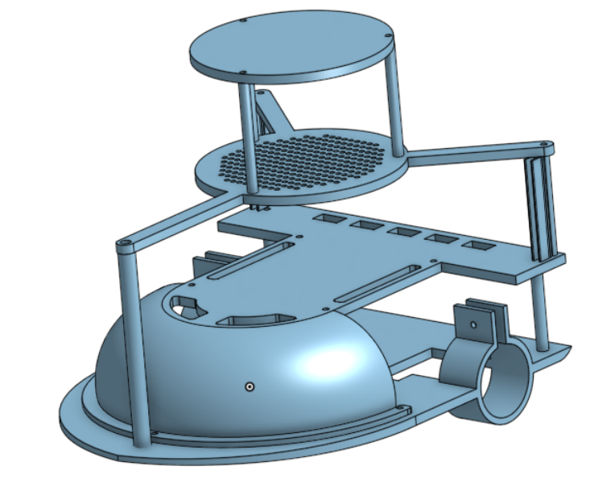
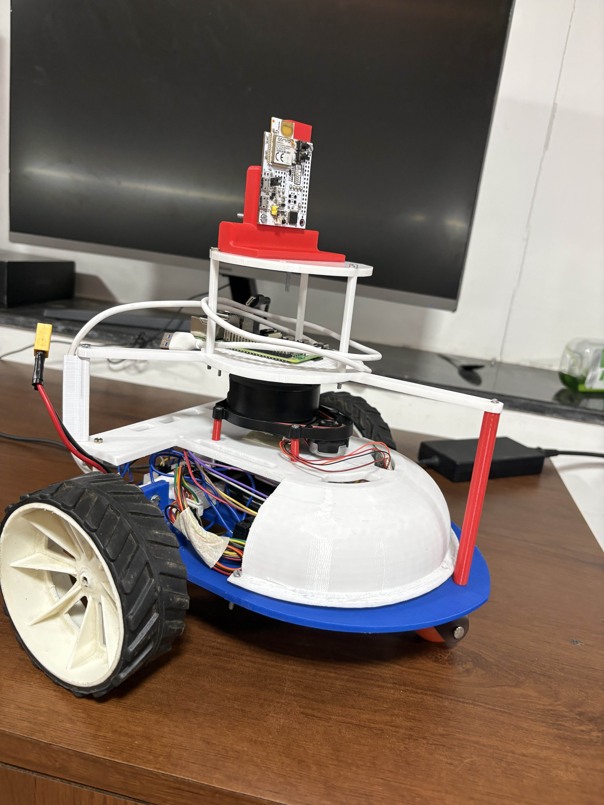

Columbus Maximus is an autonomous mobile robot built to explore and navigate an indoor environment on its own. Instead of being constantly controlled by a person, it can understand its surroundings, figure out where it is, create a map of the environment, and move towards a given destination.
The robot uses a LiDAR sensor to “see” its surroundings, while UWB positioning and wheel encoders help it determine where it is and how it is moving. These different sources of information are combined to give the robot a more reliable understanding of its position.
A Raspberry Pi 4 B acts as the robot’s brain, running ROS 2 and handling mapping, localization, and navigation. An ESP32 handles the real-time control of the motors and uses encoder feedback with PID control to make sure the robot moves accurately.
In simple terms, Columbus Maximus is about giving a robot the ability to see, understand where it is, and find its own way — bringing together mechanical design, electronics, programming, and robotics into one autonomous system.
Hardware

Chassis stl

Assembled Chassis
Demos
Teleop video
Uwb demo
Slam and map
Nav2